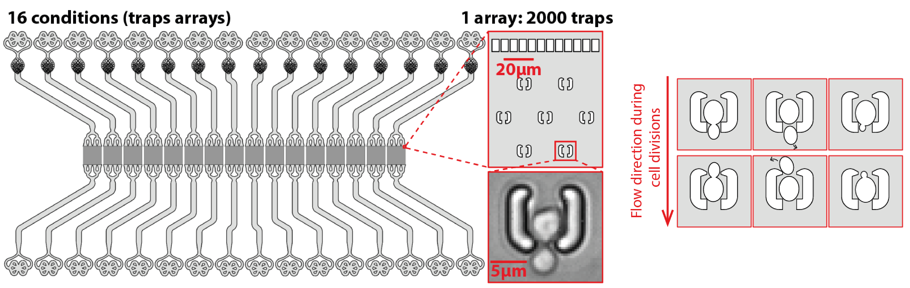
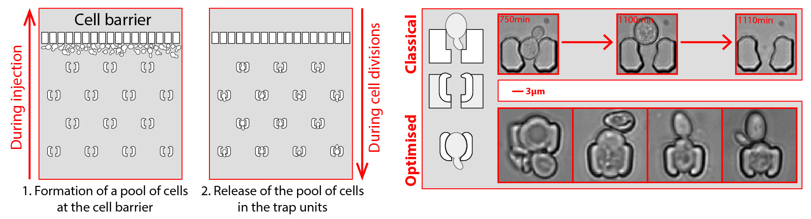

My research & developments
Overview
A fascinating aspect of biology is how living systems have evolved extremely complex features to maintain their general homeostasis. However, most living systems ultimately fail to maintain equilibrium and die, such as in cases of aging and starvation. Understanding these processes at the cellular level is crucial for comprehending how complex organisms behave in such contexts. During my PhD, I developed several tools to study single-cell dynamics, primarily using microfluidics, timelapse microscopy, and deep-learning image analysis.
Development of microfluidic devices to measure single-cell dynamics
My research relies on the development of custom-made microfluidic devices to monitor the growth of individual cells over multiple generations or several days. For that, we have set-up a clean room that allowed me to perform the standard SU8-based photolithography processes to generate microfluidic prototypes (More details about my designs here).

Picture of the in-house clean room
Detailed example: microfluidic device for high-throughput replicative lifespan assays
In the context of replicative aging, microfluidics has been the go-to method since 2012 as it enables longitudinal tracking of aging mother cells by separating them from their rejuvenated progeny. However, current microfluidic devices are either low-throughput or overly complicated. Therefore, I have designed my own device utilizing an array of microtraps to capture and observe over 30,000 cells per experiment.
Device to trap single budding yeast cells and track them throughout their replicative lifespan. (More info) (Publication)
The device's design is intentionally simple for robustness, utilizing only one inlet and one outlet. An array of traps is positioned with a line of pillars in front of it to allow the cells to be injected from the outlet, as illustrated below. These pillars also serve as a bubble trap and debris filter, making the experiment more robust and user-friendly. Moreover, the trap's morphology has been optimized to accommodate cells of various sizes, spanning over an order of magnitude. Using claws at the tips of the traps and thin walls (2 µm thick) enables larger cells to modify the internal volume of the trap while still being trapped inside.
Optimized device with a simplified injection system and fine-tuned traps to trap even big cells.
Typical timelapse of a field of view of a replicative aging experiment.
Therefore, we developed (with Gilles Charvin) and trained deep-learning based networks, embedded in a software, DetecDiv, to automate and parallelize the detection of divisions, cell contours, fluorescence, and other metrics, from single cells (See more details).
Example of a deep-learning analysis pipeline to detect cell divisions from timelapse images.
Example of an automated detection of cell divisions, cell contour and nucleus contour using DetecDiv.
Tired of counting cell divisions? Bored of manually detecting a specific event from your movies? Don't want to spend half your PhD clicking on cells 🙃?
— Théo ASPERT (@TheoAspert) October 11, 2021
I spent half of mine for you: 👇🧵https://t.co/J9D4WyBTpn pic.twitter.com/WpPKRN0DMp
This approach allows for the extraction of various signals from dividing cells in a high-throughput and automated manner, the most common being the population's survival curve:
Example of survival curve obtained with DetecDiv, from a wildtype and two known longevity mutants.
This tool can be used to measure the dynamics of a biological process requiring high-throughput temporal tracking of single cells in a more general way, since it allows for standardized screening of markers and mutants, for fundamental or applied purposes.
Dynamics of replicative aging at the single-cell level
Aging can be defined in two overlapping ways: an increase in mortality or a decline in fitness and biological functions with age. Understanding how cells age is crucial for comprehending the intricacy of organismal aging. In this context, budding yeast is an effective model organism to investigate aging since it divides and perishes in roughly two days, during which many physiological processes (division, nuclear and mitochondrial homeostasis, proteostasis, etc.) are negatively impacted while the likelihood of dying increases.
A mother cell divides asymmetrically a certain number of times before dying. It accumulates aging factors throughout its lifespan, but daughter cells are born rejuvenated and free of these factors.
From this dogma, many hallmarks of aging have been described. How are they mechanistically associated? Which are causes of aging, which are consequences? Do they form defined pathways, or a network of events? In other words, what are the dynamics of replicative aging?.
Different models of aging. Each color represents a hallmark of aging
Budding yeast, used with the state-of-the-art high-throughput microfluidics and image analysis technology, can help decode such complexity.
Schematic showing how cell-cell heterogeneities can lead to misinterpret an averaged signal
Tracking single cells longitudinally throughout the whole aging process is key to address the complexity of this phenomenon. State-of-the-art microfluidics and image analysis technologies enable such observations in a high-throughput, standardized and systematic manner.
Dynamics of entry into quiescence
Besides aging and senescence, I also developed an interest in how cells react to nutrient exhaustion. One type of response is the entry into a dormant state, namely quiescence, in which the cell can survive over long time scales under unfavorable conditions. Quiescence is a highly conserved phenomenon of living organisms, but how cells enter this state remains poorly understood, in part because they have not been studied under physiologically relevant conditions. In the case of microorganisms, this requires observing the cells under unperturbed conditions as they progressively modify their growth environment by exhausting the nutrient. The second difficulty is that the entry into quiescence is systematically associated with a high degree of cellular heterogeneity, making bulk analysis uninformative (just like with aging).
To overcome these technical barriers, we have developed (with Basile Jacquel) a new methodology based on microfluidics to observe the metabolic transitions in individual cells from fermentation to stationary phase in real-time. This tool offers a combined approach that respects the temporality of medium changes dictated by population growth while allowing single-cell level information.
Schematics of the microfluidic system used to perfuse cell-free media into an observation chamber, in a continuous manner
This integrated microfluidic device is based on continuous separation of the cells from the media (~5.108 cells/mL) using inertial forces, and subsequent perfusion of the filtered media into an observation chamber containing isolated single-cells.
Quantification of the absolute cytosolic pH as a function of time; each line represents an individual cell, while the bold line indicates the average among cells with either an early (red lines, N = 32 cells displayed) or late (blue line, N = 64 cells displayed) decaying pH.
Using it, we were able to observe the rise of distinct populations during the autonomous degradation of the media, and to identify what drives this cell fate decision (See publication).
Twitter thread:
Have you ever seen budding yeast cells going to bed after a hard day's work?
— Théo ASPERT (@TheoAspert) November 23, 2021
We have dev a method to track single cells from a culture throughout all its growth phases (fermentation (FP), diauxic shift (DS), respiration (RP) & stationary phase (SP)):👇🧵https://t.co/MHZsFwwQpl pic.twitter.com/EyNfzKb1rg
Collaborative projects
Aside from my own projects, I have collaborated with various labs to create innovative microfluidic solutions that address technical challenges. For instance:
Molina and Tora Lab: development of a microfluidic device to longitudinally track single mammal cells.
Schmidt lab: development a device for isolating and harvesting single axons, in order to correlate timelapse microscopy with cryo-EM observations.
Barral lab: transfert of microfluidic designs and protocols in order to perform replicative aging assays in budding yeast.
Teixeira lab: development of a microfluidic device and a analysis pipeline to track single cells experiencing clonal aging due to telomere attrition.
Houseley lab: ran replicative aging experiments under different growing conditions.
Kobayashi lab: transfert of microfluidic designs and protocols in order to perform replicative aging assays in budding yeast.
Knop lab: development and fabrication of a microfluidic device to focus cells in 3 dimensions, to reproduce a cytometer in chip.
Coudreuse lab: developement of a microfluidic device and of an analysis pipeline to track single S. pombe cells in a high-throughput and automated manner.
Ciliberto lab: development a device for tracking the apparition of spontaneous mutations, at the single-cell level.